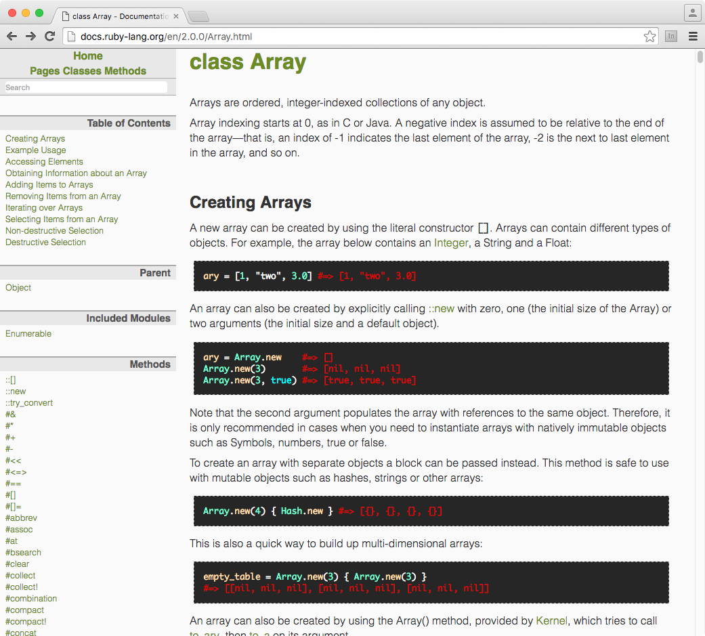

Introduction to Programming in Ruby
← Use arrow keys →
You are here: Intro to Ruby
Today:
Basics of RubyTomorrow:
RubyGems, working with data and scraping
Day 1 Schedule
1. Set up the room
2. Variables, types, conditionals, iteration
3. Methods and classes
Set up the room.
$ irb
irb(main):001:0> puts "hello"
hello
=> nil
$ irb
irb(main):001:0> require './my_script'
MyLibrary
=> MyLibrary
Intro.
Programming is 3 things
Assignment, Conditional, Iteration
Assignment
Conditional
if name == "Al"
puts "Hello #{name}"
end
Iteration
names = ["Al", "Joe", "Sally"]
names.each do |name|
puts "#{name} is here!"
end
Let's go!
Strings & Integers
address = 155
street = "6th Ave"
city = "New York"
state = "NY"
zip_code = "10013"
city + ", " + state
#=> "New York, NY"
"#{city}, #{state}"
#=> "New York, NY"
"#{address} #{street}"
#=> "155 6th Ave"
address + " " + street
#=> TypeError: String can't be coerced into Fixnum
from (irb):10:in `+'
from (irb):10
address.to_s + " " + street
#=> "155 6th Ave"
Type coercion
5.to_s #=> "5"
"5".to_i #=> 5
5.to_f #=> 5.0
str = ""
str << city
str << ", "
str << state
#=> "New York, NY"
str = ""
str += city
str += ", "
str += state
#=> "New York, NY"
address += address
#=> 310
a = 3
b = 3
a == b
#=> true
a = 3
b = 3
if a == b
puts 'they match'
end
a = 1
b = 2
if a != b
puts "They don't match!"
end
a = 3
b = 3
if a == b
puts "they match"
else
puts "they don't match"
end
Arrays & Hashes
students = ["Amy", "Joe", "Sally", "Harry"]
students.pop
#=> "Harry"
students
#=> ["Amy", "Joe", "Sally"]
students.shift
#=> "Amy"
students
#=> ["Joe", "Sally"]
What else can I do?
(students.methods - Object.methods).sort
#=> [:&, :*, :+, :-, :<<, :[], :[]=, :all?, :any?, :assoc, ...]
Getting help

students << "Amy"
#=> ["Joe", "Sally", "Amy"]
person = {}
person[:first_name] = "Al"
person[:last_name] = "Shaw"
person = {
:first_name => "Al",
:last_name => "Shaw"
}
person[:first_name]
#=> "Al"
people = []
people.push(person)
#=> [{:first_name=>"Al", :last_name=>"Shaw"}]
Iteration
students.each do |student|
puts "#{student} is in class today"
end
#=>
Joe is in class today
Sally is in class today
Amy is in class today
even_numbers = [2, 4, 6, 8, 10]
odd_numbers = []
# how can we programmatically
# fill up this array with odd numbers
even_numbers.each do |n|
odd_numbers << n + 1
end
odd_numbers
#=> [3, 5, 7, 9, 11]
even_numbers.map do |n|
n + 1
end
#=> [3, 5, 7, 9, 11]
even_numbers.map { |n| n + 1 }
#=> [3, 5, 7, 9, 11]
even_numbers
#=> [2, 4, 6, 8, 10]
even_numbers.map! { |n| n + 1 }
#=> [3, 5, 7, 9, 11]
Methods
def full_address(address, street, state, zip)
"#{address} #{street}, #{state}, {zip}"
end
# Who's in class today?
def is_in_class(student)
attendance = {
"Amy" => true,
"Joe" => true,
"Sally" => false,
"Harry" => true
}
if attendance[student]
"here"
else
"absent"
end
end
# Try it
is_in_class("Sally")
#=> Absent
is_in_class("Joe")
#=> Here
Everything in Ruby is an object
class Fixnum
def +(num)
self - num
end
end
I just blew your mind
A useful example:
[1,2,3].sum
NoMethodError: undefined method `sum' for [1, 2, 3]:Array
from (irb):1
class Array
def sum
self.reduce(0) {|memo, it| memo += it; memo}
end
end
Classes are factories for objects
class Student
attr_reader :name, :grade
def initialize(name, grade)
@name = name
@grade = grade
end
end
s = Student.new("Sally", 8)
#=> #<Student:0x1052aca28 @name="Sally", @grade=8>
s.name
#=> "Sally"
Why should I care?
Let's build a system that assigns students to teachers!
# 1_registrar.rb
class Student
attr_reader :name, :grade, :teacher
def initialize(name, grade)
@name = name
@grade = grade
end
@@teachers = {
"Shanahan" => 5,
"Kovacek" => 5,
"Streich" => 5,
"Ankunding" => 5,
"Marks" => 5
}
def assign_teacher
@@teachers.each do |t_name, slots|
if slots > 0
@teacher = t_name
@@teachers[t_name] -= 1
puts "#{@name} is assigned to #{t_name}"
puts "#{t_name} now has #{slots - 1} slots left"
return
end
end
end
end
s = Student.new("Sally", 8)
#=> #<Student:0x1052aca28 @name="Sally", @grade=8>
s.assign_teacher
Sally is assigned to Streich
Streich now has 4 slots left
s.teacher
#=> "Streich"
How could we change this to randomly assign teachers?
# 2_registrar_random.rb
class Student
attr_reader :name, :grade, :teacher
def initialize(name, grade)
@name = name
@grade = grade
end
@@teachers = {
"Shanahan" => 5,
"Kovacek" => 5,
"Streich" => 5,
"Ankunding" => 5,
"Marks" => 5
}
def random_list
@@teachers.keys.shuffle
end
def assign_teacher
random_list.each do |t_name|
slots = @@teachers[t_name]
if slots > 0
@teacher = t_name
@@teachers[t_name] -= 1
puts "#{@name} is assigned to #{t_name}"
puts "#{t_name} now has #{slots - 1} slots left"
return
end
end
end
end
s = Student.new("Sally", 8)
#=> #<Student:0x007facfb97e870 @name="Sally", @grade=8>
s.assign_teacher
Sally is assigned to Ankunding
Ankunding now has 4 slots left
s.teacher
#=> "Ankunding"
There are still two things wrong with this code. What are they?
1. What happens when all the slots run out?
2. You can assign the same student to another teacher
Let's handle running out of slots
# 3_registrar_random_bugfix.rb
class Student
attr_reader :name, :grade, :teacher
def initialize(name, grade)
@name = name
@grade = grade
end
@@teachers = {
"Shanahan" => 5,
"Kovacek" => 5,
"Streich" => 5,
"Ankunding" => 5,
"Marks" => 5
}
def random_list
@@teachers.keys.shuffle
end
def assign_teacher
random_list.each_with_index do |t_name, idx|
slots = @@teachers[t_name]
if slots > 0
@teacher = t_name
@@teachers[t_name] -= 1
puts "#{@name} is assigned to #{t_name}"
puts "#{t_name} now has #{slots - 1} slots left"
return
end
if idx == random_list.length - 1
puts "There's no room for #{@name}"
end
end
end
end
To test this, we'll use a hint from stuff we'll learn about tomorrow
RubyGems are bits of code that add functionality to Ruby
$ gem install faker
Successfully installed faker-1.6.3
1 gem installed
require './3_registrar_random_bugfix'
students = []
(0.upto(25)).each do |s|
students << Student.new(Faker::Name.name, 8)
end
students
=> [#<Student:0x007fc7cbfca018 @name="Ms. Magdalena Lowe", @grade=8>,
#<Student:0x007fc7cbfc96e0 @name="Alivia Wintheiser",
@grade=8>, #<Student:0x007fc7cbfc8da8 @name="Jeanie Marks", @grade=8>,
...]
students.each do |s|
s.assign_teacher
end
Ms. Magdalena Lowe is assigned to Marks
Marks now has 4 slots left
Alivia Wintheiser is assigned to Shanahan
Shanahan now has 4 slots left
Jeanie Marks is assigned to Kovacek
Kovacek now has 4 slots left
Conrad Durgan is assigned to Kovacek
Kovacek now has 3 slots left
Kenneth Schaden is assigned to Marks
Marks now has 3 slots left
Bennett Olson I is assigned to Ankunding
Ankunding now has 4 slots left
Bud Mante V is assigned to Streich
Streich now has 4 slots left
Manuela Cole is assigned to Shanahan
Shanahan now has 3 slots left
Arch Schaden is assigned to Kovacek
Kovacek now has 2 slots left
Ophelia Carter is assigned to Shanahan
Shanahan now has 2 slots left
Lori Kovacek is assigned to Streich
Streich now has 3 slots left
Emmie Nienow DDS is assigned to Ankunding
Ankunding now has 3 slots left
Cecil Harvey is assigned to Kovacek
Kovacek now has 1 slots left
Clay Weber is assigned to Ankunding
Ankunding now has 2 slots left
Martin Wisoky is assigned to Marks
Marks now has 2 slots left
Orion Wehner is assigned to Kovacek
Kovacek now has 0 slots left
Miss Jo Welch is assigned to Ankunding
Ankunding now has 1 slots left
Karolann Grant is assigned to Ankunding
Ankunding now has 0 slots left
Jerry Franecki is assigned to Shanahan
Shanahan now has 1 slots left
Mrs. Taya Harris is assigned to Marks
Marks now has 1 slots left
Dusty Simonis V is assigned to Streich
Streich now has 2 slots left
Alexanne Ryan is assigned to Shanahan
Shanahan now has 0 slots left
Alfreda Effertz is assigned to Marks
Marks now has 0 slots left
Kaylie Buckridge IV is assigned to Streich
Streich now has 1 slots left
Kenton Rogahn I is assigned to Streich
Streich now has 0 slots left
There's no room for Rodger Wilkinson II
There's no room for Rodger Wilkinson II
If we really want Ruby to blow up when there's no more slots
if idx == random_list.length - 1
raise RuntimeError, "There's no room for #{@name}"
end
Streich now has 0 slots left
RuntimeError: There's no room for Guiseppe Leffler
from /Users/ashaw/rails/data-institute/code/3_registrar_random_bugfix.rb:31:in `block in assign_teacher'
from /Users/ashaw/rails/data-institute/code/3_registrar_random_bugfix.rb:21:in `each'
from /Users/ashaw/rails/data-institute/code/3_registrar_random_bugfix.rb:21:in `each_with_index'
from /Users/ashaw/rails/data-institute/code/3_registrar_random_bugfix.rb:21:in `assign_teacher'
from (irb):6:in `block in irb_binding'
from (irb):6:in `each'
from (irb):6
from /usr/local/var/rbenv/versions/2.2.2/bin/irb:11:in `<main>'
Now that we know how to use exceptions, how do we make sure the same student doesn't get assigned to two teachers?
First, let's do some refactoring
Let's keep track of which teachers have which students
#4_registrar_validated_step1.rb
class Student
MAX_SLOTS = 5
attr_reader :name, :grade, :teacher
def initialize(name, grade)
@name = name
@grade = grade
end
@@teachers = {
"Shanahan" => [],
"Kovacek" => [],
"Streich" => [],
"Ankunding" => [],
"Marks" => []
}
def random_list
@@teachers.keys.shuffle
end
def teachers
@@teachers
end
def assign_teacher
random_list.each_with_index do |t_name, idx|
slots = @@teachers[t_name]
if slots.length < MAX_SLOTS
@teacher = t_name
slots << @name
puts "#{@name} is assigned to #{t_name}"
puts "#{t_name} now has #{MAX_SLOTS - slots.length} slots left"
return
end
if idx == random_list.length - 1
raise RuntimeError, "There's no room for #{@name}"
end
end
end
end
require './4_registrar_validated_step1.rb'
s = Student.new("Al", 8)
s.assign_teacher
Al is assigned to Shanahan
Shanahan now has 4 slots left
=> nil
s.teachers
=> {"Shanahan"=>["Al"], "Kovacek"=>[], "Streich"=>[], "Ankunding"=>[], "Marks"=>[]}
Right now, we can keep assigning `s` over and over again until all teachers are full
(0.upto(25)).each {|i| s.assign_teacher }
...
s.teachers
=> {"Shanahan"=>["Al", "Al", "Al", "Al", "Al"],
"Kovacek"=>["Al", "Al", "Al", "Al", "Al"],
"Streich"=>["Al", "Al", "Al", "Al", "Al"],
"Ankunding"=>["Al", "Al", "Al", "Al", "Al"],
"Marks"=>["Al", "Al", "Al", "Al", "Al"]}
How can we prevent this?
#5_registrar_validated_step2.rb
class Student
MAX_SLOTS = 5
attr_reader :name, :grade, :teacher
def initialize(name, grade)
@name = name
@grade = grade
@assigned = false
end
@@teachers = {
"Shanahan" => [],
"Kovacek" => [],
"Streich" => [],
"Ankunding" => [],
"Marks" => []
}
def random_list
@@teachers.keys.shuffle
end
def teachers
@@teachers
end
def assign_teacher
raise RuntimeError, "#{@name} is already assigned" if @assigned
random_list.each_with_index do |t_name, idx|
slots = @@teachers[t_name]
if slots.length < MAX_SLOTS
@teacher = t_name
slots << @name
@assigned = true
puts "#{@name} is assigned to #{t_name}"
puts "#{t_name} now has #{MAX_SLOTS - slots.length} slots left"
return
end
if idx == random_list.length - 1
raise RuntimeError, "There's no room for #{@name}"
end
end
end
end
require './5_registrar_validated_step2'
s = Student.new("Al", 8)
=> #<Student:0x007fd66abe0698 @name="Al", @grade=8, @assigned=false>
s.assign_teacher
Al is assigned to Ankunding
Ankunding now has 4 slots left
s.assign_teacher
RuntimeError: Al is already assigned
from /Users/ashaw/rails/data-institute/code/5_registrar_validated_step2.rb:28:in `assign_teacher'
from (irb):4
from /usr/local/var/rbenv/versions/2.2.2/bin/irb:11:in `<main>'
Homework + Questions
Al Shaw ProPublica Data Institute • 2016 @A_L